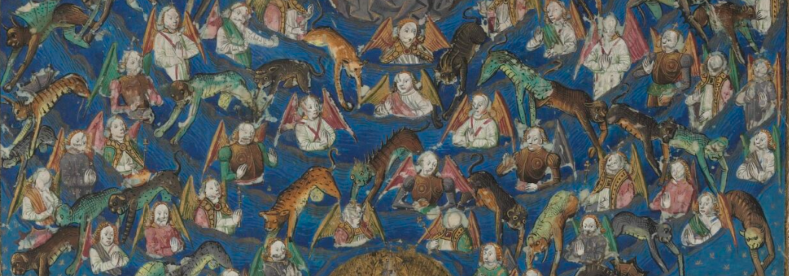

Paris, BnF fr. 603 (Regius 7087, Dupuy II 361, Rigault II 345, Fontainebleau 345)

Signalisation
Manuscrit numérisé
ici.
Titre du manuscrit tel que répertorié par la BnF : Christine de Pizan,
Livre de Faits d'arme et de chevalerie, Mutations de Fortune
Titre du texte tel que répertorié dans Jonas :
Livre de Mutacion de Fortune
Ville : Paris
Dépôt : Bibliothèque nationale de France (BnF)
Cote : français 603
Datation et localisation
Datation : XV
e siècle (vers 1410-1411) selon la BnF et Millard Meiss, 1974.
Localisation : France (Paris) selon la BnF.
Description sommaire
Nombre de volumes : 1
Nombre de feuillets : 4 feuillets de garde en papier + 242 feuillets + 4 feuillets de garde en papier
Support : Parchemin (selon la BnF).
Description codicologique
Dimensions du manuscrit :
- Pages : 375 x 275 mm (selon la BnF), 370 x 277 mm (selon Gilbert Ouy, Christine Reno et Inès Villela-Petit, 2012, p. 298).
- Surface écrite totale : 240 x 185 mm (selon la BnF), 242 x 195 mm (selon Gilbert Ouy, Christine Reno et Inès Villela-Petit, p. 298).
- Surface écrite par colonne : 242 x 82 mm (première colonne) / 74 mm (deuxième colonne) (selon Gilbert Ouy, Christine Reno et Inès Villela-Petit, p. 298).
Organisation du volume et mise en page
Cahiers : on compte 31 cahiers : 17 quaternions (f. 1-136), un ternion (f. 137-142), 12 quaternions (f. 143-238) et un binion (f. 239-242).
- Cahier 1 : 4-4 (f. 1-8)
- Cahier 2 : 4-4 (f. 9-16)
- Cahier 3 : 4-4 (f. 17-24)
- Cahier 4 : 4-4 (f. 25-32)
- Cahier 5 : 4-4 (f. 33-40)
- Cahier 6 : 4-4 (f. 41-48)
- Cahier 7 : 4-4 (f. 49-56)
- Cahier 8 : 4-4 (f. 57-64)
- Cahier 9 : 4-4 (f. 65-72)
- Cahier 10 : 4-4 (f. 73-80)
- Cahier 11 : 4-4 (f. 81-88)
- Cahier 12 : 4-4 (f. 89-96)
- Cahier 13 : 4-4 (f. 97-104)
- Cahier 14 : 4-4 (f. 105-112)
- Cahier 15 : 4-4 (f. 113-120)
- Cahier 16 : 4-4 (f. 121-128)
- Cahier 17 : 4-4 (f. 129-136)
- Cahier 18 : 3-3 (f. 137-142)
- Cahier 19 : 4-4 (f. 143-150)
- Cahier 20 : 4-4 (f. 151-158)
- Cahier 21 : 4-4 (f. 159-166)
- Cahier 22 : 2-2 (f. 167-174)
- Cahier 23 : 4-4 (f. 175-182)
- Cahier 24 : 4-4 (f. 183-190)
- Cahier 25 : 4-4 (f. 191-198)
- Cahier 26 : 4-4 (f. 199-206)
- Cahier 27 : 4-4 (f. 207-214)
- Cahier 28 : 4-4 (f. 215-222)
- Cahier 29 : 4-4 (f. 223-230)
- Cahier 30 : 4-4 (f. 231-238)
- Cahier 31 : 2-2 (f. 239-242)
Foliotation : Foliotation moderne à l’encre et foliotation moderne au crayon, toutes deux en chiffres arabes, coin supérieur droit.
Signatures et réclames :
- Présence de signatures à l’encre brune plus claire que celle du texte. Environ le tiers des cahiers présente la série complète des signatures, c’est-à-dire une lettre suivie d’un chiffre romain de .j. à .iiij. (généralement aux deuxième et troisième feuillets du cahier).
- Réclames (soit centrées sous la deuxième colonne, soit alignées à droite sous la deuxième colonne) : f. 88v, 96v, 104v, 112v, 120v, 128v, 136v, 150v, 158v, 166v, 174v, 182v, 190v, 198v, 206v, 214v, 222v, 230v, 238v.
Nombre de colonnes et de lignes par page : Deux colonnes de 40 (ou parfois de 39) lignes par page.
Préparation de la page :
- Réglure : À la mine de plomb.
Organisation du volume :
- Table d'ensemble du livre (f. 81ra) et tables des rubriques au début de chaque partie du livre : f. 81ra-b, f. 90vd-91ra, f. 109ra-b, f. 127vc, f. 143ra-b, f. 173vc-174ra, f. 205vd-206vc.
- Titres : On trouve des titres courants, à l’encre rouge, au haut de chaque page page, au centre. Au f. 81r, on peut lire : « le livre de la mutacion de fortune ». Par la suite, le recto de chaque feuillet donne le plus souvent à lire : « de la mutacion de fortune » (voir f. 82r). En général, au haut du verso de chaque feuillet, le titre courant indique la partie du livre. Par exemple : « la premiere partie du livre » (f. 81v). Selon Gilbert Ouy, Christine Reno et Inès Villela-Petit (p. 299), la couleur de l’encre nous permet de supposer que les titres courants ont été ajoutés en même temps que les rubriques.
État du manuscrit
Qualité du parchemin et de l'encre : Le parchemin est mutilé à plusieurs endroits (incisions, coutures, coins arrachés) et on trouve des taches d’humidité ; l’encre est écaillée par endroits.
Écriture
Type : Petite minuscule ronde semi-cursive (selon la BnF).
Analyse de l’écriture (nombre de mains, type d'écriture, etc.) : Une seule main (selon Gilbert Ouy, Christine Reno et Inès Villela-Petit, p. 299).
Ponctuation : Les signes de ponctuation sont très rares dans la
Mutacion de Fortune.
Varia
Ce manuscrit est un recueil. Le
Livre de Mutacion de Fortune (f. 81r-242r) succède au
Livre de Faiz d’armes et de chevallerie (f. 1r-80r).
« [P]our faciliter le repérage, au début de presque chaque partie des ouvrages, des signets ont été fabriqués en découpant une languette de parchemin et en l’enroulant autour d’une petite fente pratiquée à différentes hauteurs. Au f. 240b, d’une écriture fine (XVII
e/XVIII
e s.), l’inscription Louis le Grand à côté d’une référence au bon roy de Hongrie (v. 23359). » (Gilbert Ouy, Christine Reno et Inès Villela-Petit, p. 297)
Il y un feuillet blanc (142r-v) entre la quatrième et la cinquième partie du livre.
Contrairement à ce que l’on remarque partout ailleurs, aucune rubrique ne précède les initiales champies de deux unités de réglure aux f. 98vd et 99ra.
Contenu
Identification
Auteur : Christine de Pizan
Titre : le livre de la mutacion de fortune (f. 81r)
Sujet : Résumé de l'histoire ancienne
Date de composition : novembre 1403
Forme : principalement en vers octosyllabiques (une partie en prose : f. 138vd-141vd)
Langue : français
Analyse du texte
Commentaire sur l'étendue du texte : Ce manuscrit donne les sept parties du texte.
Rubrique initiale :
« Cy commence la premiere partie du livre de la mutacion de fortune laquelle parle de la personne qui a compille le dit livre et de ses adventures
Et premierement prologue J » (f. 81rb)
Incipit :
« COment sera ce possible
A moy simple et pou sensible
De proprement exprimer
Ce quon ne peut extimer
Bonnement ne bien comprendre
Non tant ait homs sceu apprendre » (f. 81vc)
Incipit-repère :
« Pour ce que hardement
est tant necessaire a
haultes choses empre
n
dre que sans lui ja
mais emprises ne se
roient » (f. 2ra)
Excipit :
« Explicit la vij
e. et derreniere partie du livre de la mutacion de fortune » (f. 242ra)
État matériel
Omissions et signes de renvoi : Il y a un blanc pour une miniature non réalisée au f. 178rb.
Corrections et suppressions : À quelques endroits dans le texte, on remarque des corrections. Le plus souvent, il s’agit de mots raturés parce qu’ils ont été copiés deux fois ou parce qu’ils sont à remplacer par un autre. Voir par exemple les f. 126ra, 151ra, 175rb et 184vd. Au f. 113vd, on relève une préparation de correction (« sans ») qui n’a pas été réalisée. Un vers a parfois été ajouté au bas de la colonne (f. 108vd et 129vc). Les titres courants ont aussi subi des corrections : au f. 107v, « la premiere partie du livre » a été corrigé pour « la II
e partie du livre » ; au f. 135r, les mots « du livre » ont été barrés du titre « du livre de la mutacion de fortune ».
Décorations
Description générale
À la suite de chacune des sept rubriques annonçant une nouvelle partie du livre, on trouve une initiale ornée de cinq unités de réglure. Des miniatures au cadre doré et des bordures accompagnent le début des sept parties. Dans la sixième partie du livre, outre l’initiale de cinq unités de réglure placée en ouverture, on relève une initiale ornée de quatre unités de réglure (f. 178rb) et une bordure. Au même endroit, on remarque un blanc pour une miniature qui n’a pas été réalisée. À l’intérieur de chaque partie du livre, des initiales champies (de deux unités de réglure le plus souvent, mais parfois de trois unités de réglure) succèdent aux rubriques. Des pieds-de-mouche champis se trouvent dans le texte et dans les tables des rubriques. Au f. 127vc, on remarque, en rouge, une indication à l’enlumineur qui a été partiellement grattée. Enfin, aux f. 111rb et 117rb, on observe que la rubrique est assortie d’un numéro d’attente à l’encre brune.
Recension générale
Miniatures : f. 81vc, 91rb, 109rb, 127vd, 143vc, 174rb, 206vd.
Bordures : f. 81vc, 91rb, 109rb, 127vd, 143vc, 174rb, 178rb, 206vd.
Initiales ornées : f. 81vc, 91rb, 109rb, 127vd, 143vc, 174rb, 178rb, 206vd.
Initiales champies : f. 81ra, 81vd, 82vc, 82vd, 83rb, 83vc, 83vd, 84vc, 84vd, 85vc, 86ra, 86rb, 88ra, 88vd, 90vc, 92rb, 92vd, 93ra, 93vc, 94ra, 94vc, 94vd, 95vd, 96vc, 97ra, 97rb, 98rb, 98vd, 99ra, 99rb, 100rb, 101ra, 101vd, 102rb, 102vc, 103ra, 103vc, 104ra, 104rb, 105rb, 105vd, 107ra, 109ra, 110vc, 110vd, 111vc, 112vd, 113rb, 114vd, 117rb, 118vd, 119vc, 120ra, 120vc, 121vc, 122vc, 123ra, 123vd, 124rb, 124vc, 124vd, 125vd, 126vc, 127vc, 128vc, 129rb (x2), 130rb, 130vc (x2), 131ra, 131rb, 131vd, 132ra, 132rb (x2), 132vc (x2), 133rb, 133vd, 134rb, 136vc, 136vd, 138ra, 138rb, 138vc, 138vd, 143ra, 143vd, 146vc, 148ra, 148rb, 148vc, 150rb, 151vd, 152vc, 154rb, 155rb, 156vd, 158rb, 159vc (x2), 160vc, 162rb, 162vc, 162vd (x2), 164vd, 166vd, 168ra, 169rb, 170vd, 171ra, 171vc, 172vd, 173vc, 175vd, 177ra, 178vd, 179vd, 182vc, 183vd, 184rb, 184vc, 185rb, 185vd, 186vc, 187ra, 187vc, 189vc, 190vd, 191vc, 192ra, 192vc, 193vd, 194rb, 195rb (x2), 197rb, 197vd, 199ra, 199rb, 199vc, 199vd (x3), 200rb, 200vc, 201ra, 201vc, 202vc (x2), 203rb, 204vd, 205vd, 207vd, 208vc, 209ra, 209vc, 209vd, 210vd, 211rb, 211vd, 212ra, 212rb, 212vc, 214ra, 214rb, 214vd, 215rb, 216rb, 216vd, 217rb, 217vc, 217vd, 218rb, 219ra, 219vc, 219vd, 220vd, 221ra, 221vc, 222ra, 222vd, 224ra, 224rb, 224vc, 224vd, 225rb, 226rb, 226vc, 227rb, 227vc, 228ra, 229ra, 229vd (x2), 230rb, 231ra, 231vd, 232ra, 233rb, 234vc, 236rb, 236vd, 237vd (x2), 238vc, 239vc, 239vd, 240rb, 241rb, 241vd.
Miniatures
Miniature du folio 81vc
Christine de Pizan dans son étude (14 unités de réglure).
Miniature du folio 91rb
Eur accueille les visiteurs au château de Fortune (14 unités de réglure).
Miniature du folio 109rb
L’intérieur du château : deux papes sont assis sur le trône et se regardent. Quatre ecclésiastiques se font face : un cardinal, en rouge, un clerc, en gris, un prêtre, en bleu, et un dominicain, en manteau noir sur robe blanche (15 unités de réglure).
Miniature du folio 127vd
La salle de Fortune : Christine regarde le mur de gauche, où sont peintes des scènes de combat (14 unités de réglure).
Miniature du folio 143vc
Les rois de la terre : six princes barbus argumentent (15 unités de réglure).
Enluminure du folio 174rb
Combat d'Amazones (14 unités de réglure).
Miniature du folio 206vd
La fondation de Rome (15 unités de réglure).
Bordures
Bordure partielle (étendue à une demi-page) : f. 81vc.
- Baguette et vignetures fleuries rouges, bleues et dorées dans la marge de gauche.
- Vignetures fleuries rouges, bleues et dorées au haut et au bas de la première colonne.
Bordure partielle (étendue à une demi-page) : f. 91rb.
- Baguette et vignetures dorées dans l’entre-colonne.
- Vignetures dorées et fleurs rouges centrées au haut et au bas du feuillet.
Bordure partielle (étendue à une demi-page) : f. 109rb.
- Baguette et vignetures dorées dans l’entre-colonne.
- Vignetures dorées et fleurs rouges et bleues centrées au haut et au bas du feuillet.
Bordure partielle (étendue à une demi-page) : f. 127vd.
- Baguette et vignetures dorées dans l’entre-colonne.
- Vignetures dorées et fleurs rouges et bleues centrées au haut et au bas du feuillet.
Bordure partielle (étendue à une demi-page) : f. 143vc.
- Baguette et vignetures dorées dans la marge de gauche.
- Vignetures fleuries rouges, bleues et dorées au haut et au bas de la première colonne.
Bordure partielle (étendue à une demi-page) : f. 174rb.
- Baguette et vignetures dorées dans l’entre-colonne.
- Vignetures dorées et fleurs rouges et bleues centrées au haut et au bas du feuillet.
Bordure partielle (étendue à une demi-page) : f. 178rb.
- Baguette et vignetures dorées dans l’entre-colonne.
- Vignetures dorées et fleurs rouges et bleues centrées au haut et au bas du feuillet.
Bordure partielle (étendue à une demi-page) : f. 206vd.
- Baguette et vignetures dorées dans l’entre-colonne.
- Vignetures dorées et grosses fleurs rouges et bleues centrées au haut et au bas du feuillet.
Initiales
Initiales ornées de cinq unités de réglure : f. 81vc (initiale bleue sur fond rose à remplissage mosaïqué doré, bleu et rose), 91rb (initiale bleue sur doré à remplissage de vigneture), 109rb (initiale rose sur doré à remplissage de vigneture), 127vd (initiale bleue sur doré à remplissage de vigneture), 143vc (initiale rose sur doré à remplissage de vigneture), 174rb (initiale bleue sur doré à remplissage de vigneture), 206vd (initiale bleue sur doré à remplissage de vigneture).
Initiale ornée de quatre unités de réglure : f. 178rb (initiale rose sur doré à remplissage de vigneture).
Initiales champies de trois unités de réglure : f. 81ra, 205vd, 232ra.
Initiales champies de deux unités de réglure : f. 81vd, 82vc, 82vd, 83rb, 83vc, 83vd, 84vc, 84vd, 85vc, 86ra, 86rb, 88ra, 88vd, 90vc, 92rb, 92vd, 93ra, 93vc, 94ra, 94vc, 94vd, 95vd, 96vc, 97ra, 97rb, 98rb, 98vd, 99ra, 99rb, 100rb, 101ra, 101vd, 102rb, 102vc, 103ra, 103vc, 104ra, 104rb, 105rb, 105vd, 107ra, 109ra, 110vc, 110vd, 111vc, 112vd, 113rb, 114vd, 117rb, 118vd, 119vc, 120ra, 120vc, 121vc, 122vc, 123ra, 123vd, 124rb, 124vc, 124vd, 125vd, 126vc, 127vc, 128vc, 129rb (x2), 130rb, 130vc (x2), 131ra, 131rb, 131vd, 132ra, 132rb (x2), 132vc (x2), 133rb, 133vd, 134rb, 136vc, 136vd, 138ra, 138rb, 138vc, 138vd, 143ra, 143vd, 146vc, 148ra, 148rb, 148vc, 150rb, 151vd, 152vc, 154rb, 155rb, 156vd, 158rb, 159vc (x2), 160vc, 162rb, 162vc, 162vd (x2), 164vd, 166vd, 168ra, 169rb, 170vd, 171ra, 171vc, 172vd, 173vc, 175vd, 177ra, 178vd, 179vd, 182vc, 183vd, 184rb, 184vc, 185rb, 185vd, 186vc, 187ra, 187vc, 189vc, 190vd, 191vc, 192ra, 192vc, 193vd, 194rb, 195rb (x2), 197rb, 197vd, 199ra, 199rb, 199vc, 199vd (x3), 200rb, 200vc, 201ra, 201vc, 202vc (x2), 203rb, 204vd, 207vd, 208vc, 209ra, 209vc, 209vd, 210vd, 211rb, 211vd, 212ra, 212rb, 212vc, 214ra, 214rb, 214vd, 215rb, 216rb, 216vd, 217rb, 217vc, 217vd, 218rb, 219ra, 219vc, 219vd, 220vd, 221ra, 221vc, 222ra, 222vd, 224ra, 224rb, 224vc, 224vd, 225rb, 226rb, 226vc, 227rb, 227vc, 228ra, 229ra, 229vd (x2), 230rb, 231ra, 231vd, 233rb, 234vc, 236rb, 236vd, 237vd (x2), 238vc, 239vc, 239vd, 240rb, 241rb, 241vd.
Rubriques
Lien à ajouter vers la table des rubriques.
Reliure
Date : Reliure refaite le 22 décembre 1969 (Gilbert Ouy, Christine Reno et Inès Villela-Petit, p. 305).
Type de reliure : Reliure de veau raciné (Gilbert Ouy, Christine Reno et Inès Villela-Petit, p. 305).
Décorations et autres renseignements : « dos en maroquin rouge à six compartiments portant, au 2
e et 4
e, en lettres or, les titres “LIVRE DES FAITS D’ARMES et LIVRE DE LA MUTACION DE FORTUNE” ; au premier et au dernier, le chiffre de Louis XVIII et dans le troisième et cinquième une grande fleur de lys flanquée de deux petites fleurs de lys et de quatre fleurs de lys de taille moyenne dans les angles » (Gilbert Ouy, Christine Reno et Inès Villela-Petit, p. 305).
Histoire du manuscrit
Origine paléographique
Lieu de copie : ?
Artisans : Selon Gilbert Ouy, Christine Reno et Inès Villela-Petit (p. 301), l’ornemaniste « à la résille » est responsable des f. 109 et 127v, l’ornemaniste appelé l’« assistant aux trois couleurs » s’est chargé des f. 81v et 143v, tandis que les ornemanistes « à la vigne d’or » ont décoré les f. 91, 174, 178 et 206v. C’est le Maître de la Cité des dames qui est responsable de l’illustration du manuscrit (Gilbert Ouy, Christine Reno et Inès Villela-Petit, p. 302).
Destinataire : ?
Provenance médiévale ou moderne
Possesseurs : « vraisemblablement un membre du parti Armagnac, puisque ce texte [Les Fais d’armes et de chevalerie] ne parle pas de la victoire de Jean sans Peur à Liège, victoire qui fait l’objet d’éloges dans le Fais d’armes de Bruxelles. La présence de signets pourrait faire penser à Jean d’Angoulême, qui en faisait souvent usage, mais ce ms. ne figure pas dans son inventaire après décès. Le ms. avait intégré la bibliothèque royale dès le XVII
e s. » (Gilbert Ouy, Christine Reno et Inès Villela-Petit, p. 297).
Bibliographie du manuscrit
Recensions et notices
- « Français 603» dans *BnF. Archives et manuscrits*, [en ligne]. https://archivesetmanuscrits.bnf.fr/ark:/12148/cc130202 [Consulté le 1
er juin 2020].
- SECTION ROMANE, « PARIS, Bibliothèque nationale de France, Manuscrits, fr. 00603 » dans *Jonas-IRHT/CNRS*, [en ligne]. http://jonas.irht.cnrs.fr/manuscrit/76459 [Consulté le 19 mai 2020].
- Fiche codicologique par Isabelle Delage-Béland